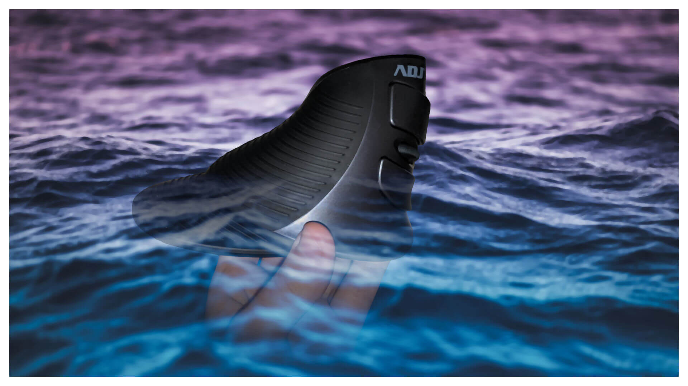

Introduction
This article was created to tell my experience about something that I have been waiting for for about a week and that I really wanted to try it!It is Shark Mouse and it is a Vertical Mouse! What is different from the Traditional Mouse? Its rather particular and bizarre shape is made in this way to obtain perfect ergonomics for human hand while holding it and to position the arm in a natural way, thus avoiding to crush the tendons of the arm
The name Shark Mouse is due to its shape that recalls, in fact, the fin of a shark, so much so that I sometimes use it to make the typical scene of Jaws with in addition the famous background music
1st Day (12·Jun·2020)
The box looks pretty good, although not quite so attractive but does what it has to do! What I don't like in most of the boxes are the circular adhesive tapes on the sides of the box, which if you don't have a sharp object, you have to remove them manually with your nails. In addition, you have to be delicate, otherwise you risk damaging the box. Other than that, I liked the fact that the Mouse is well wrapped, opening like a door!My other criticism is the door of the battery compartment, fortunately that I managed to open it easily with the slotted screwdriver. The two batteries (wrapped in a hard plastic like marble, ouch!) are AAA. Of course, in 2020 I would have liked more charging with the plug, but I imagine they thought of this solution to lower costs. Another criticism of mine is the on / off lever of the Mouse that is too small, where you have to rely on your own nail. Here too, they could think of a better and less cumbersome solution
And after all the little bit of stuff, let's get to the juice! Trying it for my first time, I immediately found myself lost, unable to move the cursor correctly and I couldn't even press the buttons naturally and automatically (due to their different position). In addition, there were even two more buttons near my thumb, but we'll talk about it later
2nd Day (13·Jun·2020)
Luckily, the initial difficulty of Yesterday is slowly fading away, even managing to make good use of the two buttons positioned close to the thumb, which are, essentially, the Forward and Backward, very useful if you want to climb between a directory (folder) and another in the File Manager or to return to the previous pages and to advance on the following pages in a Browser quickly and with little difficulty!Since I was feeling pretty good, I already had in mind that I wanted to do this review, but, in addition to the text, I also needed a suitable thumbnail! So, I decided to use GIMP and to apply two images, the sea as a background (found at random in the magical world of the Web) with that Mouse over it while I hold it with my hand (to make a trash like I like), while I am photographed myself and then make a meticulous clipping. Since I had to do a job well done, I got help with the graphics tablet, putting the Mouse away
Finally, to seriously improve the use of the Mouse, I thought of playing a game based on the improvement of the precision and accuracy of the aim, very useful for better video games to the FPS / TPS games. Among these, I chose AimLab, where on Steam it's free (thankfully!) But there is a problem! Since my PC is not a Gaming PC and I use the non-proprietary video drivers on Manjaro (because I hate Nvidia and their unwillingness to seriously support GNU / Linux, damn them!), The game also lag with the settings at a minimum. So, I decided to move to another location, which instead is a Gaming PC and also has AMD Ryzen, processor that I would like so much in my PC and also has better support than the disastrous Nvidia video drivers
After the long and boring initial tutorial, in AimLab it is chock full of disciplines to do. I limited myself to making the simpler ones, since hitting targets that moved in a zigzag pattern, dodging the shots and staying quite far from me doesn't know what to do!
3rd Day (14·Jun·2020)
Thanks to training of Yesterday, from a novice I became a black belt, managing to move quickly and precisely like lightning and press the buttons at the right times! I'm seriously afraid of my ability to envy many peo... ok ok, on the last sentence I could save myself...However, seriously, the day was not quite interesting, at least, I perceived it this way. All the difficulty I had in using that Mouse is completely gone, no longer missing the traditional Mouse that I had previously, kindly given to my mother
I wanted my family to try it and you can already imagine the reaction. Indeed, my mother was unable to move well with the Mouse and she wanted to give up after not even 5 minutes and I burst out laughing
Since I liked AimLab so much (for what it is), I wanted to try it for my little sister, always with that Mouse and also telling her what she has to do to play, and then later go to doze in my bed, given that, we had gone home and was quite tired. When there are a lot of clothes shops, I'm already sure to go walking on my own, even if I don't have to wait for who knows how many hours to see my mother choosing in vain some clothes to buy
Conclusion
To conclude, do you recommend it? Of course, but only if you have the willpower to try it and get used to it. It is logical that, at the beginning, you will not feel well, it will be the habit of making a difference and you will be rewarded for it! ;)❤️ And to conclude... + 🗣️ Comment Section
Published on 16·Jun·2020. Reposted on 30·Oct·2026Telegram: Ita. · Eng.